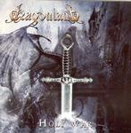

| Artist: | Dragonland |
| Title: | Holy War |
| Label: | Black Lotus BLR/CD 036 |
| Length(s): | 51 minutes |
| Year(s) of release: | 2002 |
| Month of review: | [10/2002] |
Sample this album in MP3 or RealAudio
The next track is again that kind of heroic metal that is so popular these days. Like many of their contemporaries, Dragonland owes a lot to the classical composers. In that sense, most of these bands actually descent from Yngwie Malmsteen. The totality lacks originality, but this does not mean I do not like it. By comparison, there is not that much in the way of egotripping guitarsolo's here. Melodically the music is at times a bit on the kitschy side, but the melodies are at least there. Something of the Bolero in here as well, by the way.
Im a less happy with Holy War, the title track. Things are getting a bit too slick for me here. The chanted vocals supposedly support a sense of comradeship, but it never works for me. With track five, notwithstanding its acoustic opening, the music starts to irritate. Better is The Returns To The Ivory Plains with its dancing, waltzing layers of keyboards. Again, the boys want to get home soon, in view of the speed with which they play.
Forever Walking Alone is a more balladic track, teraful with some sweet piano playing and a Spanish acoustic guitar solo. At the end, we get some climactic speed playing, slightly over the top. The next two tracks feature plenty of bombast again, but, and this is nice, also a bit of more quieter atmospheric parts. The closer is still and soft with fluting keys. A bit like the opener, quite orchestral, but also somber and dark.
The conclusion: This band is close to Rhapsody and all those others band that are now aiming for the spotlight in bombastic speedmetal. There is not much that differentiates them from all those bands: the playing is fine, plenty of classically oriented passages, bombastic keyboards. The only real difference, I guess, is that the band does not fill there songs with fast guitar solo's all the time.